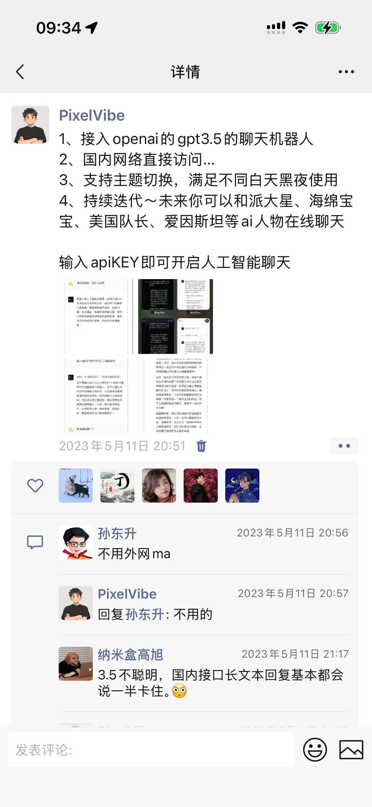
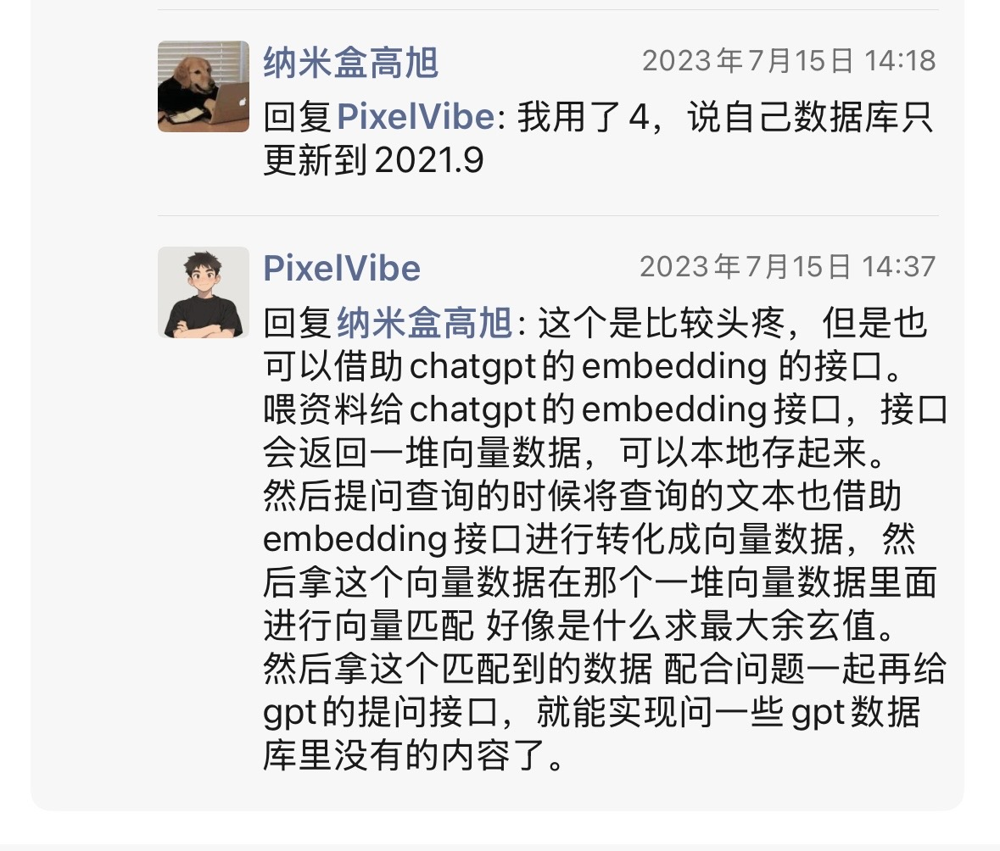
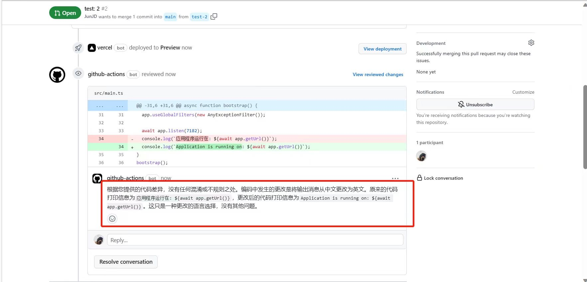
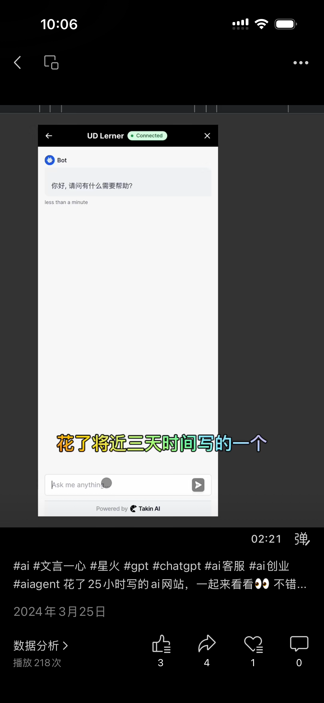
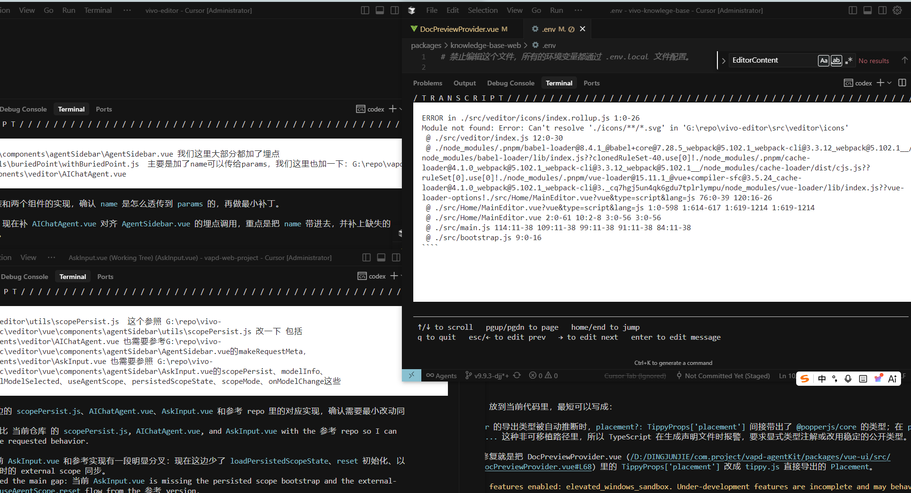

从 Coding Agent 到业务协作系统的一次产品设计思考。
从模型入口到掌控 Agent
模型入口、模型拓展、Agent 问世、掌控 Agent。
ChatGPT 让模型进入大众视野，API 让它进入自己的系统。

这一阶段还不是 Agent。更准确地说，是模型从“可调用”走向“可用”。


分任务，执行，验收，再执行。分水岭不是会不会聊天，而是能不能推进到可验证结果。

重点不再是“Agent 能不能做”，而是“我如何让它在不同项目里被我掌控”。

我在代码世界里学到的， 不是 Agent 可以替人写代码。
而是只要系统有清晰边界、验收点和恢复能力，Agent 就有机会承担真实执行。
为什么 Coding Agent 先成立
代码世界不简单，但它的复杂被工程系统包裹过。
业务不是更乱的代码，而是充满柔性上下文的现实世界。
它不是更大的聊天框，而是把问题、数据、洞察、方案、风险和下一步动作组织到同一个空间里。
它是一组增长杠杆。加商品不是跑偏，而是选品扩张这条路径上的候选方案。
方案可以被展开、对比、追问、加约束、确认，再进入执行准备。
不是先背术语，而是从产品动作里看到它们为什么需要存在。
不是把业务世界改造成代码世界， 而是给关键动作一个沙盘。
先把开放问题变成方案对象，再让人判断，再进入真实执行。
Agent 进入协同办公笔记系统
设计实践后面接入新的产品思路，这里只保留结构位置。
尽情使用它，探索它的边界
token 已经投入，产物已经变多，但产物还不等于成果。
AI 不是可以直接拔插替换的零件，更不可能简单取代一家公司 10%、20% 甚至 30% 的人。
这个理解太粗暴。AI 在很多任务上很强，但在复杂语境、组织关系、风险判断和长期责任上仍然需要人。
更真实的变化是任务被拆开，产物暴增，流程重组，人的判断位置被重新定义。
边界不是恐惧的来源，边界是安全感的来源。
你准备好了吗？ 留在台上。
长期会变好，短期会阵痛。真正重要的是，上手、试错、校准、站稳。